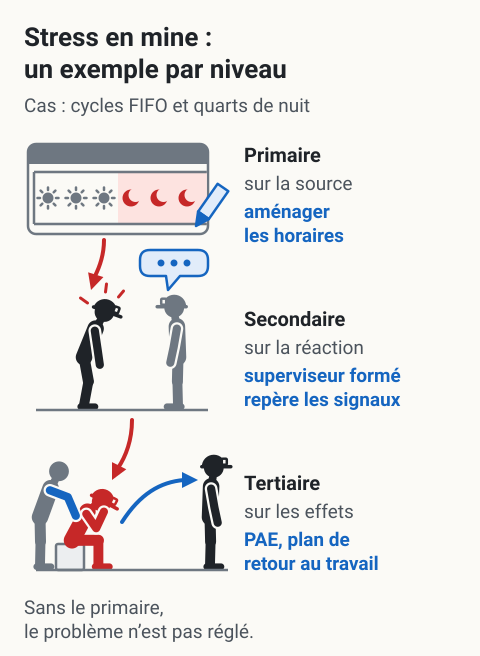

Les trois niveaux de prévention
L'essentiel : En SST psychosociale, on distingue trois niveaux d'intervention : primaire (agir sur les causes, dans l'organisation du travail), secondaire (renforcer les capacités des travailleurs et superviseurs à détecter et gérer), tertiaire (intervenir auprès des cas avérés). Les trois sont nécessaires, mais le primaire est le plus efficace et le moins coûteux à long terme. Beaucoup d'entreprises investissent surtout dans le tertiaire (PAE), ce qui revient à éponger sans fermer le robinet.
Cadre
| Niveau | Cible | Quand intervenir |
|---|---|---|
| Primaire | Causes (organisation du travail) | Avant que le problème apparaisse |
| Secondaire | Capacités (travailleurs, superviseurs) | Précocement, avant aggravation |
| Tertiaire | Conséquences (cas avérés) | Après l'apparition du problème |
Logique : un programme de prévention complet inclut les trois niveaux. Mais sans primaire, le secondaire et le tertiaire deviennent une réponse permanente à un problème qu'on ne règle pas.
 Toucher l'image pour l'agrandir
Toucher l'image pour l'agrandir
Les trois niveaux se distinguent par le moment où l’on intervient et par leur cible : les causes dans l’organisation du travail (primaire), les capacités à détecter et gérer (secondaire), les conséquences chez les personnes déjà affectées (tertiaire). Les trois sont nécessaires ; seul le primaire change les conditions de travail.
Lire le schéma en texte
- Une flèche, en bas, va d’« avant le problème » à « après son apparition » et rougit vers la droite. La charge que porte le travailleur, des caisses rouges, figure les conditions de travail.
- Primaire, avant le problème : le travailleur porte la charge ; une flèche bleue en retire une caisse. Agir sur les causes, dans l’organisation du travail.
- Secondaire, tôt, avant aggravation : il plie sous toute la charge et montre des premiers signes (traits rouges) ; une personne, en face, lui parle. Détecter et gérer, en renforçant les capacités des travailleurs et des superviseurs.
- Tertiaire, après son apparition : le travailleur, en rouge, est assis, la tête dans la main ; une personne pose la main sur son dos. Soutenir le rétablissement des personnes déjà affectées. La charge est toujours là, posée à côté : ce niveau ne change rien aux conditions qui ont contribué.
- Mention au bas du schéma : « Les trois sont nécessaires ; seul le primaire change le travail. »
D’après « L’essentiel », le tableau « Cadre » (cible, quand intervenir) et les définitions, avantages et limites des trois niveaux de cette page ; voir aussi Démarche de prévention en RPS, étapes. Schéma de principe : aucune efficacité comparée, aucun délai.
Prévention primaire
Définition : agir sur les conditions de travail pour éliminer ou réduire les RPS à la source.
| Action | Exemples |
|---|---|
| Réduction de la charge | Planification réaliste, élimination de tâches inutiles, priorisation |
| Augmentation du contrôle | Participation aux décisions de méthode, marge sur les pauses |
| Renforcement du soutien | Présence terrain des cadres, ratios suffisants, jumelage entre pairs |
| Reconnaissance | Programmes structurés, rétroaction régulière |
| Aménagement des horaires | Choix des cycles Comparatif des cycles FIFO (14/14, 20/10, 21/7), gestion du quart de nuit |
| Politique anti-violence et anti-harcèlement | Procédures claires, formation, traitement rapide des plaintes |
Avantages : effet large (touche tous les travailleurs), durable, économiquement le plus rentable.
Limites : nécessite engagement de la direction, demande des changements d'organisation parfois résistés, effets visibles à moyen terme (6 à 18 mois).
Prévention secondaire
Définition : renforcer les capacités individuelles et collectives à détecter, comprendre et gérer les RPS.
| Action | Exemples |
|---|---|
| Formation des superviseurs | Détection des signaux, conduite de conversations difficiles |
| Sensibilisation des équipes | Compréhension des RPS, déstigmatisation de la santé mentale |
| Programmes de gestion du stress | Techniques de respiration, gestion du temps, hygiène du sommeil |
| Premiers soins en santé mentale | Formation certifiante (Mental Health First Aid) |
| Communication interne sur la SST psychologique | Affiches, capsules, événements |
Avantages : effet sur la culture, déstigmatisation, repérage précoce.
Limites : ne change pas les conditions de travail. Inefficace seul si l'environnement reste dégradé.
Prévention tertiaire
Définition : intervenir auprès des travailleurs déjà affectés pour limiter les conséquences et soutenir le rétablissement.
| Action | Exemples |
|---|---|
| Programme d'aide aux employés (PAE) | Voir Programme d'aide aux employés (PAE) |
| Référence vers ressources cliniques | RAMQ, assurance privée, Info-Social 811 |
| Accompagnement post-incident | Debriefing, soutien immédiat |
| Plan de retour au travail | Voir Étapes d'un retour au travail réussi |
| Suivi des cas d'invalidité | Coordination employeur-médecin-PAE |
Avantages : critique pour les cas en cours, obligation légale dans plusieurs cas (assignation temporaire, retour au travail).
Limites : intervient après le mal. Coûteux par cas. Ne change rien aux conditions qui ont contribué.
Application en mines
Erreur classique en mine : déployer un PAE de qualité (tertiaire) et une politique anti-harcèlement (secondaire), mais laisser inchangée l'organisation du travail (primaire). Résultat : les indicateurs ne s'améliorent pas malgré les investissements.
{kind=link}

Toucher l'image pour l'agrandirLe même cas, des cycles FIFO et des quarts de nuit, vu par les trois niveaux : agir sur la source (aménager les horaires), sur la réaction (un superviseur formé repère les signaux) et sur les effets (PAE, plan de retour au travail). Sans le primaire, le secondaire et le tertiaire répondent en permanence à un problème qu’on ne règle pas.
Lire le schéma en texte
- Primaire, sur la source : un horaire en rotation, des jours (soleils) puis des nuits (lunes sur fond rouge) ; un crayon bleu le réaménage. Aménager les horaires : choix des cycles FIFO, gestion du quart de nuit.
- Une flèche rouge descend de l’horaire vers un mineur casqué, courbé, qui montre des premiers signes (traits rouges).
- Secondaire, sur la réaction : un superviseur formé, en face, lui parle (bulle bleue) et repère les signaux : formation des superviseurs à la détection des signaux et à la conduite de conversations difficiles.
- Une seconde flèche rouge descend vers le même mineur, en rouge, assis, la tête dans la main. Tertiaire, sur les effets : une personne pose la main sur son dos, et une flèche bleue le mène, debout, vers son retour au travail : programme d’aide aux employés (PAE), plan de retour au travail.
- Mention au bas du schéma : « Sans le primaire, le problème n’est pas réglé. »
D’après les tableaux d’actions des trois niveaux de cette page (aménagement des horaires ; formation des superviseurs ; PAE et plan de retour au travail) et la section « Application en mines » ; voir Comparatif des cycles FIFO, Formation des superviseurs à la détection, Programme d’aide aux employés (PAE) et Étapes d’un retour au travail réussi. Schéma de principe : un exemple, pas un lien de cause démontré.
Approche recommandée
- Diagnostic des trois niveaux (existe-t-il une stratégie primaire?)
- Investissement équilibré, avec priorisation du primaire si déficitaire
- Indicateurs de suivi par niveau (pas seulement le taux d'utilisation du PAE)
Indicateurs par niveau
| Niveau | Indicateurs |
|---|---|
| Primaire | Scores Questionnaire de Karasek (JCQ) et Questionnaire de Siegrist (ERI), prévalence du Iso-strain - Ce que ça signifie, taux de roulement |
| Secondaire | Nombre de superviseurs formés, signalements précoces, qualité des conversations rapportées |
| Tertiaire | Utilisation du PAE, durée des invalidités psychologiques, taux de retour au travail réussi |
Documents et outils
| Document | Type | Source |
|---|---|---|
| Guide INRS « Prévention des RPS » | inrs.fr | |
| LaMontagne et al., approche intégrée | Article PDF | Bibliothèques universitaires |
| Trousse INSPQ de surveillance et d'intervention | INSPQ | |
| Gabarit CNESST, rôles et pouvoirs de programme de prévention | CNESST | |
| Guide CCHST sur la santé mentale au travail | Pages web | cchst.ca |
Voir le centre de ressources : 📁 Documents et outils.
Pour aller plus loin
Références
- LaMontagne, A. D. et al. (2007). A systematic review of the job-stress intervention evaluation literature, 1990-2005. International Journal of Occupational and Environmental Health, 13(3), 268-280.
- Bourbonnais, R. et al. (2011). Effectiveness of a participative intervention on psychosocial work factors. *Occupational and Environmental Medic